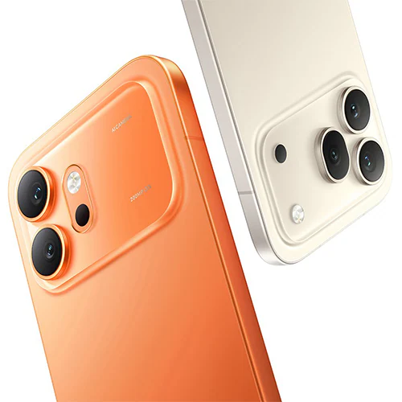
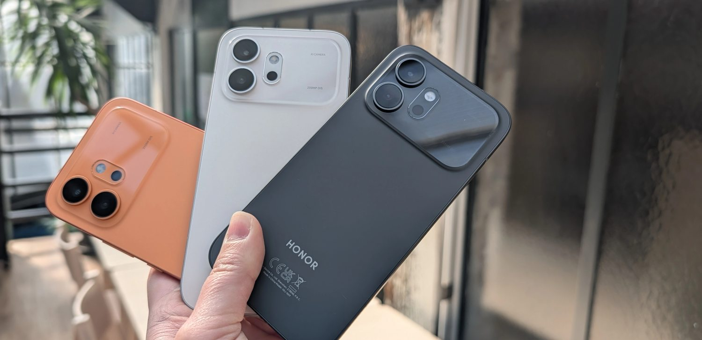
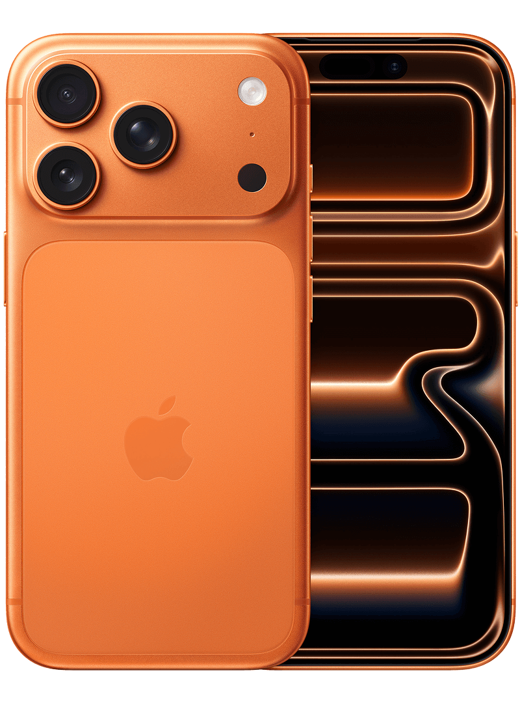
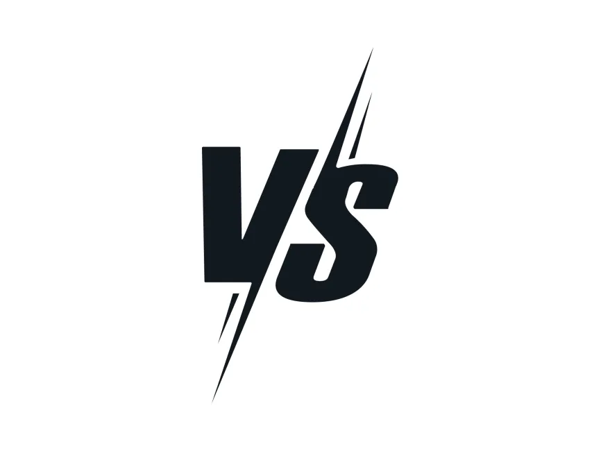
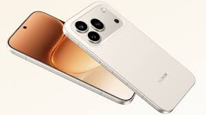

Le Honor 600 et sa variante Pro dévoilés en mars 2026. C'est une famille de smartphones premium composée du Honor 600 et Honor 600 Pro.
Le Honor 600 est la nouvelle génération des smartphones flagship de Honor. Il conserve le positionnement haut de gamme de la série 600, avec un accent marqué sur :
- un écran AMOLED ultra fluide 120Hz
- une batterie longue durée avec charge ultra-rapide
- un nouveau processeur Snapdragon dernière génération
- un système de caméra avancé avec stabilisation optique
🔍 Les modèles disponibles
Honor 600
- Épaisseur : 7,5 mm
- Poids : 175 g
- Appareil photo principal : 50 Mpx avec OIS
- Écran : 6,5" AMOLED 120Hz
- Batterie : 5000 mAh avec charge 66W
Honor 600 Pro
- Dimensions : 160,8 × 76,3 × 7,8 mm
- Poids : 195 g
- Appareil photo principal : 108 Mpx avec OIS amélioré
- Écran : 6,7" AMOLED 120Hz
- Batterie : 5500 mAh avec charge 88W
Innovation
Honor met en avant plusieurs innovations sur le Honor 600 :
- un écran LTPO révolutionnaire avec adaptation dynamique de la fréquence
- une batterie silicone dernière génération pour plus de capacité
- un système de refroidissement graphène plus efficace
- une architecture processeur optimisée pour l'efficacité énergétique
🎥 Photo & vidéo
Honor met en avant :
- un système triple caméra réoptimisé
- un traitement d'image ultrarapide avec IA
- l'enregistrement vidéo 8K à 30fps
- un mode nuit amélioré avec réduction de bruit avancée
⚙️ Performances
- Processeur Snapdragon 8 Gen 2 Leading Version
- 8 ou 12 GB de RAM selon le modèle
- GPU Adreno haute performance pour les jeux
- Stockage jusqu'à 1TB
🔋 Batterie & charge
- Batterie 5000 mAh (600) ou 5500 mAh (Pro)
- Charge rapide 66W (600) ou 88W (Pro)
- Charge sans fil 50W
- Autonomie jusqu'à 2 jours en utilisation normale
💶 Positionnement et sortie
- Présentés le 18 mars 2026 lors du Honor Event à Barcelone
- Un positionnement premium axé sur l'autonomie et la charge rapide
- Tarification compétitive face aux autres flagships du marché
- Disponibilité mondiale annoncée pour avril 2026
🎞️ Démonstrations


Comparaison Honor 600 Pro vs iPhone 17 Pro



💭 Mon avis
Je trouve que personnellement c'est un excellent téléphone et qu'il est plutôt abordable pour ce qu'il propose. Les performances, l'autonomie et la qualité photo sont vraiment au rendez-vous. Si j'avais à choisir un téléphone cette année, ce serait celui-là.
N'hésitez pas à aller voir la vidéo pour plus de détails, je recommande ! 👇